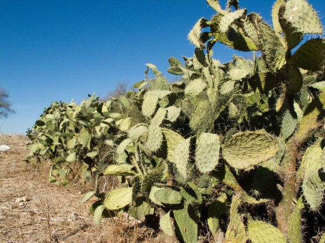
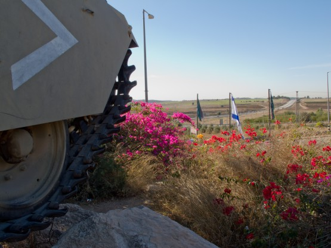
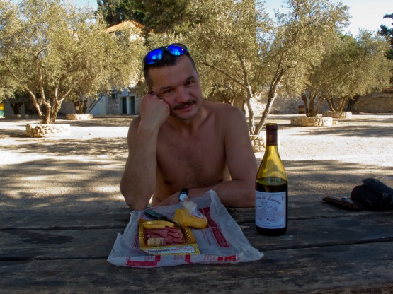
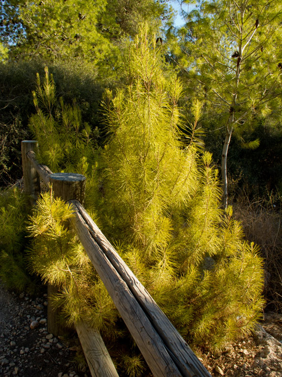
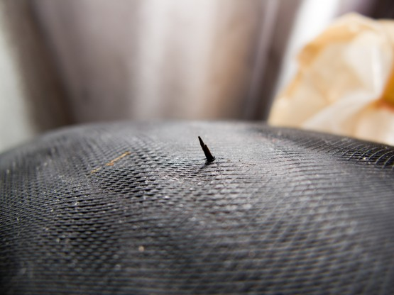
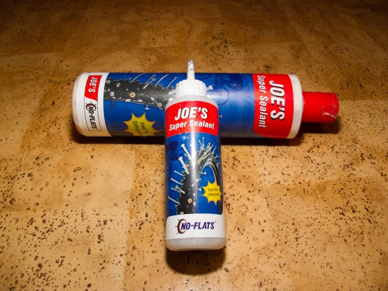

Второй день ВелоХануки.
Встали не очень рано, часов в 7. Уже рассвело, пока мы собирались, поднялось солнце. Быстрее чем за 1.5 часа выйти не удалось, жаль. Выяснилось, что в 100 метрах от нашей стоянки есть кран с водой, с удовольствием умылись.
План на день страшным не казался - своим ходом доехать до Иерусалима - примерно 70 километров грунтовок, набор высоты около 800м. У меня была даже некая уверенность, что к 6 часам вечера мы там будем всяко. НО все оказалось не так просто. Во-первых, мы совсем отвыкли от жары, а солнце припекало весьма конкретно, вода пошла бутылка за бутылкой, а суммарно за день выпили около 4 литров на человека. Во-вторых, местные грунтовки это скорее камни разного размера, чем грунт и скорость движения по ним не слишком высокая. Ну и в третьих это первый день и вкатки еще явно нет.
Жарко и сухо, даже кактусы высохли.

Ближе к обеду добираемся до Латруна. Встречаем местного велосипедиста по имени Nimrod Cohet. Он угощает нас энергетическими батончиками и снабжает наклейками своего велоклуба, на которых изображен козел на байке. Подозреваю что в Израиле козел имеет несколько иной смысл  Как же нам все-таки везет с людьми!
Как же нам все-таки везет с людьми!
Комментарий Андрея
Подаренные батончики проехали с нами весь маршрут и реально помогли в предпоследний день вкручивания, когда шли до Арада. Останавливаться не хотелось. Имелось желание максимально приблизиться к Араду. Но силы иссякали. Мы ещё не знали, что впереди ждёт такая душевная встреча с джиперами в ночи, с таким количеством вкусной еды! Я, вообще, предвзято отношусь к энергетикам. Можно сказать вообще их не потребляю. Но, здесь организм сам диктовал свои условия. Саня предложил, я поддержал. На вкус, как желейная конфета. Саню торкнуло быстрее. Я реально ощутил прилив сил, но позже. Спасибо тебе, Nimrod Cohet.
Следующая остановка монастырь на месте, где Иисус преломил хлеб. Многозначительно бродим по развалинам храма 5 века и двигаемся дальше. А дальше то место, которое я хотел посмотреть еще дома - Музей танковых войск Израиля. Находится он на холме вокруг бывшего здания английского полицейского участка и огромный черно-зеленый флаг танковых войск виден за много километров. Вход платный - 30 шекелей. Внутри встречаем группу туристов из Латвии. Они уже договорились насчет русскоязычного экскурсовода. Экскурсоводом оказывается симпатичная девушка, она же по совместительству младший сержант танковых войск Израиля.
Максимум, что я ожидал от этого музея это полазить по танкам разных держав и времен, но получили мы много больше. Экскурсия началась с американских танков на которых в 48 году сражались израильтяне. Прошлись вдоль рядов боевой техники, вплоть до знаменитого израильского танка Меркава. Интересно полазить по одному из лучших в мире танков, но самое интересное было впереди. Экскурсоводка подвела нас к стене, на которой написаны фамилии 5000 танкистов, погибших в воинах Израиля. Меня удивил факт, что на стене оставлено место для фамилий людей, которые погибнут в будущих войнах.
Дальше пошли внутрь здания, вот там действительно понимаешь, что значит хранить память. В затемненных залах на больших экранах сменяются фотографии и биографии танкистов погибших в этот день, играет грустная музыка. Ощущение печали и величия подвига, молодцы, именно так нужно помнить каждого воина. Дальше башня из брони, сквозь которую сочатся слезы. . . и в конце всего 15 минутный фильм, в том числе и на русском языке. Музей оставляет очень сильное впечатление. Немного побродили сквозь сотни единиц трофейной советской техники и на выход. Пора и так провели в музее не меньше часа.
Гусеницы, цветы и флаг Израиля. Символично.

Рядом с музеем знаменитый своими винами Латрунский монастырь. Долго выбирали вино, но жаба сказала брать сухое за 25 шекелей. Вчера Игорь дал нам телефон знакомого с velik.org, который работает в этом магазине, но, к сожалению, его на месте не было, зато получили консультацию по телефону, спасибо. Немного поколебавшись между вариантами везти бутылку с собой или выпить ее за тенистым столиком около монастыря, решили выпить и закусить. Латрунское вино и питерская закуска.
Вино оказалось действительно вкусным и наше отставание от графика увеличилось еще на час.

Однако выехали. Если я ничего не путаю, то мы ехали именно по той дороге, по которой израильтяне прорвали блокаду Иерусалима. По крайней мере, памятники в лесу говорили именно об этом. Дорога проходит по очень красивым лесам, но уклон весьма приличный и крутить приходится на низких передачах.

У Андрея случилась первая поломка - раскрутились и потерялись две бонки крепящие первую (22 зуба) звезду. Затянули оставшиеся бонки, тронулись, через 100 метров у меня первый прокол.
Комментарий Андрея
Очень вовремя почувствовал: что то не так с переходом со звезды на за звезду… Грустно было бы остаться без первой звезды. Никогда не было подобной проблемы в походах. Не ленив в подготовке и вообще по жизни, но здесь лоханулся… Не проверил, подготавливая байк к походу. Внимательнее и пунктуальнее в подготовке, уходящие…
Небольшое отступление о джифе покрышках и проколах. Я ехал на Michelin xc dry2 кантрийной резине, Андрей на швальбовской туринговой низкопрофильной с антипрокольником. У меня за поход 3 прокола колючками.
Колючки вот такие (внутренняя сторона покрышки)

Все 3 раза спасла джифа. Колеса не разбортировал, просто после первого прокола заливал джифу, прокручивал колесо, чтобы джифа растеклась и накачивал. Третий прокол вызвал лишь небольшую потерю давления в колесе - подкачал, и хватило до конца похода. Джифа это такая жидкость, которая заполняет собой мелкие проколы и не дает выходить воздуху. Наливается она через шредер, сам ниппель нужно выкрутить. Можно ли ее залить через престу я не знаю. Ребята говорили заливать до проколов, но я поленился лишний раз качать колесо и залил уже после прокола. Вещь замечательная, со своей функцией справляется на ура.
Джифа

У Андрея ситуация была иной, он ни разу не прокололся колючками (антипрокольник), но зато 2 раза получил пробой типа змеиный укус об острые камни (низкопрофильная резина). Естественно от крупных пробоев джифа не поможет. Пока я заливал джифу и качал колесо, нас накрыла темнота. Свет в израильских горах выключают рубильником, шелк и темно (примерно за полчаса).
Комментарий Андрея
Да, по этим дорогам нужна высокопрофильная резина. Она рулит в тандеме с джифой. Мне перед поездкой некогда было искать высокий профиль. Да и особо не заморачивался перед поездкой: по весне, в движухе по Турции, остался доволен покрышками Marathon Dureme 26×2.00, ни разу не подвели. Но, надо заметить и дороги в Турции были с камушками меньшего объема. Все мои пробития (дважды за поездку) были сделаны на остро отточенных каминях, типа базальтового камня. Ну и вес рюкзака… У Сани рюкзак весил легче.
Тронулись уже в полной темноте, доехали до пересечения с 1 трассой. Позвонили Дяде Вове в Иерусалим. Мы предварительно договаривались, что примерно в это время он встретит нас на окраине Иерусалима, около зоопарка. Посмотрел в GPS, по прямой до места встречи 25 км, прикинул, что часа за 3 должны проехать - наивный. Несмотря на то, что весь оставшийся путь до Иерусалима мы реально упирались, дорога заняла почти 5 часов. Мне было жутко неудобно перед Дядей Вовой, который целых 2 часа прождал нас на пустой продуваемой ветром площадке, но ускориться все равно не получалось.
Вот и встреча, все рады, Дядя Вова зовет на экскурсию по ночному Иерусалиму, как и договаривались, а мы не в состоянии ехать совсем. Давно я так не уставал. Андрею, судя по виду, не лучше. Приходим к компромиссу, что поедем через Променад, некую смотровую площадку с видом на старый город, и уже оттуда к Дяде Вове домой. Так и сделали, на Променаде перекусили припасенным Дядей Вовой пивом и авокадо - спасибочки, очень вкусно, до дома получилось километров 20. Уснули мы быстро. Дядя Вова, не обижайся на нас, но мы даже общаться были не в состоянии.
Статистика дня: Проехали: 81.2 km, за время: 17 hours, 19 minutes, 5 seconds, набор высоты: 1668.4 m, спуск: 1125.7 m, Трек